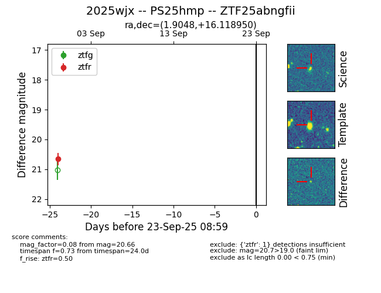

FINK: ZTF25abngfii
Lasair: ZTF25abngfii
ALeRCE: ZTF25abngfii
TNS: 2025wjx
YSE: 2025wjx
ZTF25abngfii (ztf,fink)
2025wjx (tns,yse)
PS25hmp (panstarrs)
equatorial (ra, dec) = (1.9048,+16.11895)
galactic (l, b) = (107.8439,-45.46520)

last ztfr=20.66
1 ztfr detections